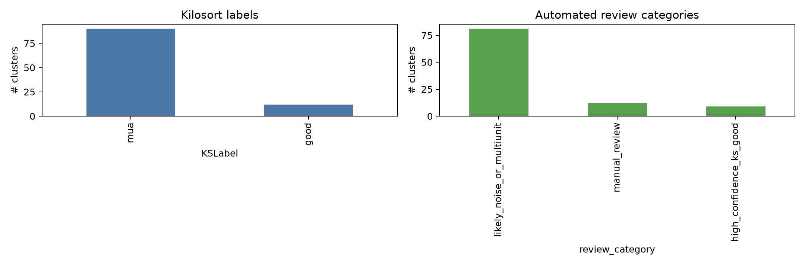
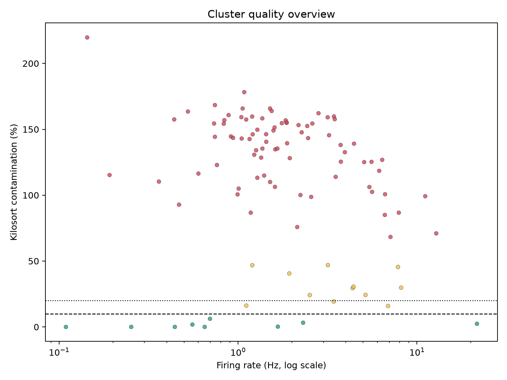

This is an automated pre-curation report. It does not replace Phy review.
cluster_quality_summary.csv | phy_review_priority.csv | cluster_quality_summary.json


| review_priority | cluster_id | review_category | KSLabel | ContamPct | Amplitude | spike_count | firing_rate_hz | isi_violation_fraction | best_raw_channel | best_channel_shank | best_on_off_condition | best_on_off_delta_hz | n_conditions_q05 |
|---|---|---|---|---|---|---|---|---|---|---|---|---|---|
| 1 | 38 | high_confidence_ks_good | good | 0.2 | 9.5 | 30264 | 1.669 | 0.0001322 | 86 | 6 | NaN | 0 | |
| 2 | 69 | manual_review | good | 19.3 | 11.5 | 62190 | 3.429 | 0.004293 | 47 | 5 | NaN | 0 | |
| 3 | 71 | high_confidence_ks_good | good | 3.2 | 21.8 | 41877 | 2.309 | 0.000597 | 45 | 5 | NaN | 0 | |
| 4 | 73 | high_confidence_ks_good | good | 6.2 | 15.2 | 12637 | 0.6968 | 0.0004748 | 46 | 5 | NaN | 0 | |
| 5 | 74 | high_confidence_ks_good | good | 0 | 18.3 | 1979 | 0.1091 | 0 | 46 | 5 | NaN | 0 | |
| 6 | 76 | high_confidence_ks_good | good | 1.8 | 22.3 | 10073 | 0.5554 | 0.0002979 | 46 | 5 | NaN | 0 | |
| 7 | 77 | high_confidence_ks_good | good | 0 | 28.9 | 11804 | 0.6509 | 0 | 47 | 5 | NaN | 0 | |
| 8 | 82 | high_confidence_ks_good | good | 2.4 | 12.5 | 392247 | 21.63 | 0.001201 | 50 | 5 | NaN | 0 | |
| 9 | 85 | manual_review | good | 16.2 | 10.9 | 20159 | 1.112 | 0.001339 | 53 | 5 | NaN | 0 | |
| 10 | 87 | manual_review | good | 15.9 | 12.4 | 125000 | 6.893 | 0.003112 | 53 | 5 | NaN | 0 | |
| 11 | 88 | high_confidence_ks_good | good | 0 | 21.4 | 8036 | 0.4431 | 0 | 53 | 5 | NaN | 0 | |
| 12 | 91 | high_confidence_ks_good | good | 0 | 17.6 | 4586 | 0.2529 | 0 | 55 | 5 | NaN | 0 | |
| 13 | 13 | manual_review | mua | 45.5 | 11.3 | 142000 | 7.83 | 0.01644 | 8 | 5 | NaN | 0 | |
| 14 | 72 | manual_review | mua | 24.3 | 13.1 | 93525 | 5.157 | 0.008083 | 45 | 5 | NaN | 0 | |
| 15 | 75 | manual_review | mua | 29.8 | 10.2 | 147903 | 8.155 | 0.008235 | 46 | 5 | NaN | 0 | |
| 16 | 80 | manual_review | mua | 24.2 | 9.9 | 45653 | 2.517 | 0.002738 | 48 | 5 | NaN | 0 | |
| 17 | 81 | manual_review | mua | 29.4 | 11.3 | 79242 | 4.369 | 0.00737 | 48 | 5 | NaN | 0 | |
| 18 | 83 | manual_review | mua | 46.9 | 11.2 | 57623 | 3.177 | 0.005658 | 51 | 5 | NaN | 0 | |
| 19 | 89 | manual_review | mua | 30.6 | 11.1 | 80150 | 4.419 | 0.004878 | 53 | 5 | NaN | 0 | |
| 20 | 94 | manual_review | mua | 40.6 | 11.3 | 35051 | 1.933 | 0.009929 | 56 | 5 | NaN | 0 | |
| 21 | 100 | manual_review | mua | 46.8 | 8.9 | 21765 | 1.2 | 0.002435 | 63 | 5 | NaN | 0 | |
| 22 | 0 | likely_noise_or_multiunit | mua | 116.4 | 11.7 | 10886 | 0.6003 | 0.1035 | 64 | 6 | NaN | 0 | |
| 23 | 1 | likely_noise_or_multiunit | mua | 113.9 | 12.2 | 63676 | 3.511 | 0.1387 | 67 | 6 | NaN | 0 | |
| 24 | 2 | likely_noise_or_multiunit | mua | 219.7 | 35.8 | 2601 | 0.1434 | 0.1319 | 68 | 6 | NaN | 0 | |
| 25 | 3 | likely_noise_or_multiunit | mua | 163.5 | 9.9 | 9513 | 0.5245 | 0.01482 | 69 | 6 | NaN | 0 | |
| 26 | 4 | likely_noise_or_multiunit | mua | 156.9 | 10.2 | 15202 | 0.8382 | 0.01908 | 69 | 6 | NaN | 0 | |
| 27 | 5 | likely_noise_or_multiunit | mua | 132.6 | 12.2 | 71650 | 3.951 | 0.1518 | 68 | 6 | NaN | 0 | |
| 28 | 6 | likely_noise_or_multiunit | mua | 146.3 | 10 | 26024 | 1.435 | 0.02279 | 71 | 6 | NaN | 0 | |
| 29 | 7 | likely_noise_or_multiunit | mua | 106.3 | 9.9 | 29149 | 1.607 | 0.01489 | 71 | 6 | NaN | 0 | |
| 30 | 8 | likely_noise_or_multiunit | mua | 145.5 | 11.5 | 58480 | 3.225 | 0.06019 | 73 | 6 | NaN | 0 | |
| 31 | 9 | likely_noise_or_multiunit | mua | 105 | 10.7 | 18270 | 1.007 | 0.02419 | 8 | 5 | NaN | 0 | |
| 32 | 10 | likely_noise_or_multiunit | mua | 98.7 | 11.3 | 46471 | 2.562 | 0.1051 | 8 | 5 | NaN | 0 | |
| 33 | 11 | likely_noise_or_multiunit | mua | 100.1 | 10.6 | 40471 | 2.232 | 0.0147 | 8 | 5 | NaN | 0 | |
| 34 | 12 | likely_noise_or_multiunit | mua | 159.1 | 11.5 | 57442 | 3.167 | 0.06509 | 73 | 6 | NaN | 0 | |
| 35 | 14 | likely_noise_or_multiunit | mua | 139.4 | 10.4 | 34095 | 1.88 | 0.02663 | 75 | 6 | NaN | 0 | |
| 36 | 15 | likely_noise_or_multiunit | mua | 128.1 | 10.5 | 35284 | 1.946 | 0.02761 | 75 | 6 | NaN | 0 | |
| 37 | 16 | likely_noise_or_multiunit | mua | 168.4 | 9.4 | 13461 | 0.7422 | 0.01152 | 77 | 6 | NaN | 0 | |
| 38 | 17 | likely_noise_or_multiunit | mua | 122.9 | 9.4 | 13817 | 0.7619 | 0.006659 | 77 | 6 | NaN | 0 | |
| 39 | 18 | likely_noise_or_multiunit | mua | 157.4 | 10.3 | 20137 | 1.11 | 0.02309 | 15 | 5 | NaN | 0 | |
| 40 | 19 | likely_noise_or_multiunit | mua | 144.6 | 9.1 | 16539 | 0.912 | 0.01288 | 14 | 5 | NaN | 0 | |
| 41 | 20 | likely_noise_or_multiunit | mua | 154.2 | 9.1 | 15082 | 0.8316 | 0.01518 | 14 | 5 | NaN | 0 | |
| 42 | 21 | likely_noise_or_multiunit | mua | 130.7 | 10.3 | 22336 | 1.232 | 0.02261 | 15 | 5 | NaN | 0 | |
| 43 | 22 | likely_noise_or_multiunit | mua | 110 | 12.2 | 27385 | 1.51 | 0.06694 | 79 | 6 | NaN | 0 | |
| 44 | 23 | likely_noise_or_multiunit | mua | 158.3 | 10.6 | 24770 | 1.366 | 0.02822 | 81 | 6 | NaN | 0 | |
| 45 | 24 | likely_noise_or_multiunit | mua | 68.3 | 9.9 | 128965 | 7.111 | 0.02671 | 80 | 6 | NaN | 0 | |
| 46 | 25 | likely_noise_or_multiunit | mua | 149.7 | 10.5 | 23239 | 1.281 | 0.02363 | 81 | 6 | NaN | 0 | |
| 47 | 26 | likely_noise_or_multiunit | mua | 142.6 | 11.3 | 21031 | 1.16 | 0.03528 | 80 | 6 | NaN | 0 | |
| 48 | 27 | likely_noise_or_multiunit | mua | 178.2 | 10.9 | 19630 | 1.082 | 0.04305 | 79 | 6 | NaN | 0 | |
| 49 | 28 | likely_noise_or_multiunit | mua | 92.8 | 9.6 | 8481 | 0.4676 | 0.003538 | 19 | 5 | NaN | 0 | |
| 50 | 29 | likely_noise_or_multiunit | mua | 153.2 | 11.1 | 39473 | 2.177 | 0.05085 | 81 | 6 | NaN | 0 | |
| 51 | 30 | likely_noise_or_multiunit | mua | 157.5 | 9.7 | 7971 | 0.4395 | 0.009034 | 19 | 5 | NaN | 0 | |
| 52 | 31 | likely_noise_or_multiunit | mua | 147.7 | 11.1 | 41107 | 2.267 | 0.04758 | 81 | 6 | NaN | 0 | |
| 53 | 32 | likely_noise_or_multiunit | mua | 138.1 | 10.4 | 67856 | 3.742 | 0.08568 | 83 | 6 | NaN | 0 | |
| 54 | 33 | likely_noise_or_multiunit | mua | 139.1 | 10.7 | 80643 | 4.447 | 0.09197 | 83 | 6 | NaN | 0 | |
| 55 | 34 | likely_noise_or_multiunit | mua | 114.9 | 10.2 | 25362 | 1.398 | 0.01526 | 21 | 5 | NaN | 0 | |
| 56 | 35 | likely_noise_or_multiunit | mua | 140.5 | 10.3 | 26062 | 1.437 | 0.01853 | 21 | 5 | NaN | 0 | |
| 57 | 36 | likely_noise_or_multiunit | mua | 156.8 | 10.3 | 33469 | 1.845 | 0.03986 | 23 | 5 | NaN | 0 | |
| 58 | 37 | likely_noise_or_multiunit | mua | 154.7 | 10.2 | 31848 | 1.756 | 0.03335 | 23 | 5 | NaN | 0 | |
| 59 | 39 | likely_noise_or_multiunit | mua | 125.1 | 13 | 91896 | 5.067 | 0.07311 | 83 | 6 | NaN | 0 | |
| 60 | 40 | likely_noise_or_multiunit | mua | 86.7 | 12.4 | 143487 | 7.912 | 0.1078 | 86 | 6 | NaN | 0 |